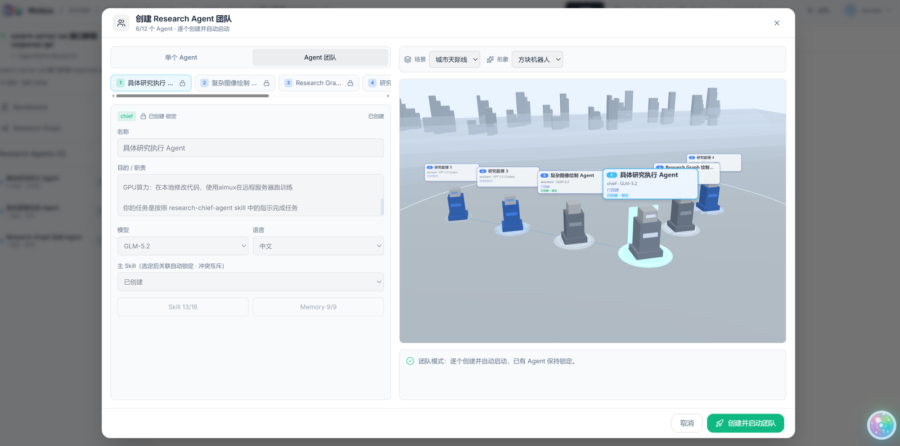
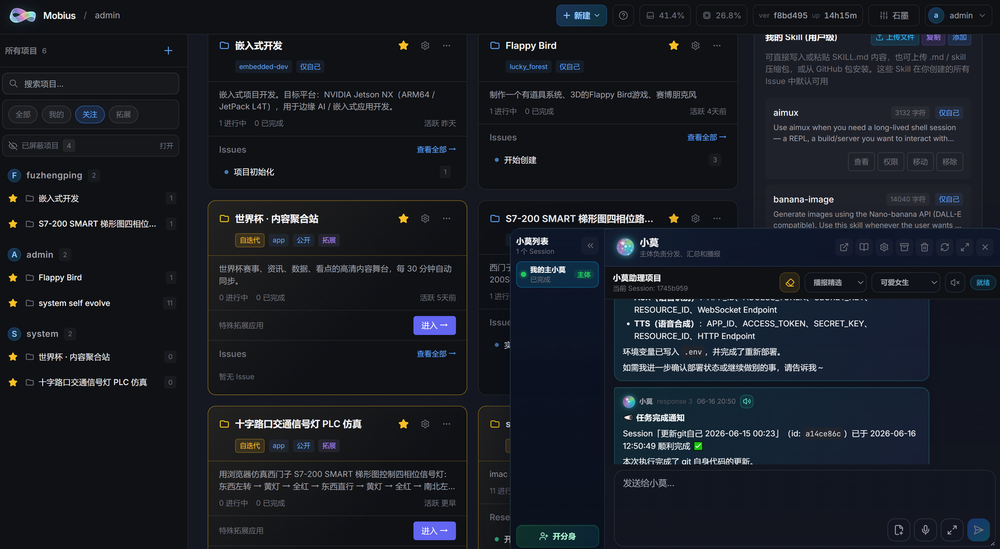
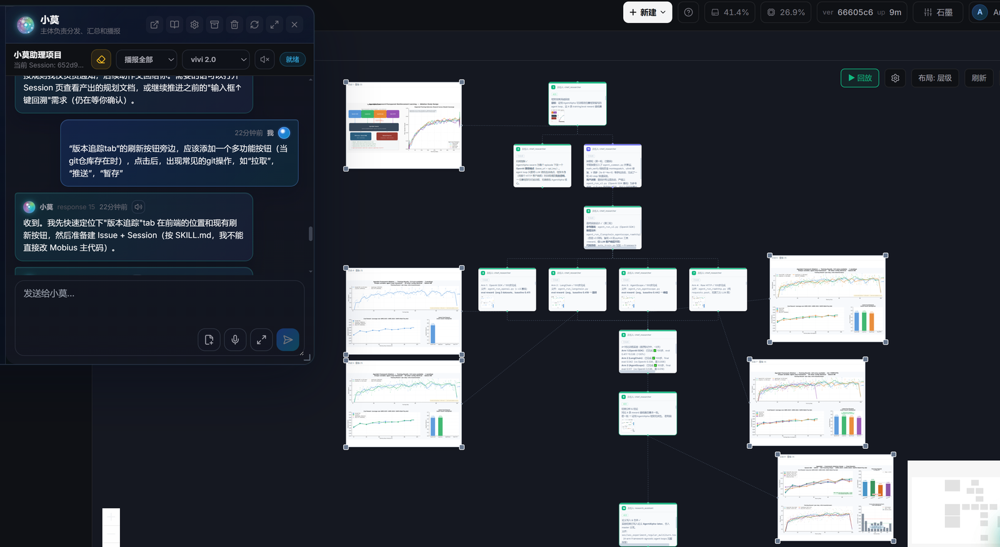

01
持续运行
系统可以围绕长期目标连续推进。
写在前面
今天的大多数 AI 工具仍然停留在单点能力：会写代码、会回答问题、会控制某个设备，或在一个任务里完成 Agent Loop。它们很强，但仍然是孤立的工具。
Mobius 要解决的不是成为其中一个节点，而是把这些节点——人类团队、多个 Agent、代码环境、知识资产、远程算力、机器人、嵌入式设备和真实物理终端——组织成一个可持续进化的协同智能体系统。
它也不是简单给 Claude Code 或其他代码 Agent 套一个壳。Mobius 把原本散落在文件系统、命令行和开发工具里的 Agent 操作能力，提升为一个可交互、可协作、可沉淀、可持续进化的系统层。Memory、Skill、项目上下文、Deep Research、执行环境、插件能力和远程算力，都不再只是开发者手里的文件和命令，而成为用户可以直接理解和操作的系统资产。
在 Mobius 中，人提出目标，Agent 拆解和执行任务，算力集群承载重负载工作，终端设备和机器人进入真实场景，知识资产和历史任务持续沉淀为系统能力。每一次执行不只是完成任务，也会反过来增强 Mobius 本身。
因此，Mobius 不是一个普通 AI 助手，也不只是一个 Agentic OS。Agentic OS 是它的内核，而 Mobius 的完整形态，是一个人机物智算协同的自进化超级智能体系统。
从点状问答，到智能体工作面
一个输入，一个模型，一条输出。
问题被单线回答，过程结束后很难沉淀为系统能力。
一个目标展开成一张智能体工作面。
执行、验证、交接和产物都会回流，成为系统继续生长的一部分。
它不只是在“完成任务”，也在让任务反过来塑造系统。
这就是为什么莫比乌斯不是更聪明的聊天框，
而是一个会自我生长的 AgenticOS。
系统可以围绕长期目标连续推进。
每次执行都能成为下一轮能力升级的材料。
内容、工具、产品和科研成果都能沉淀进系统。
亮点一
这是莫比乌斯最重要的亮点： 它不是一次性交付的 AI 工具，而是能在真实使用中持续吸收、持续替换、持续变强的系统。
用户提出需求，系统会把改进组织成任务、执行、验证和沉淀； 外部信息、项目历史和用户偏好会继续进入系统，形成新的判断材料。
这就是 Mobius 的自生长闭环： 每一次使用都不只是完成一次任务，而是在替换这艘 AI 忒修斯之船上的一块新木板。
亮点二
普通 AI 把问题交给一个模型回答。 莫比乌斯把一个目标展开成一张智能体工作面，让多个角色并行推进、互相补位、最终收敛。
一个需求进来，系统自动拆成研究、开发、测试、验证、撰写、复盘等多条可执行路径。
多个智能体独立作业，通过共享黑板、任务记录和中间产物持续对齐，而不是各说各话。
这张工作面可以围绕多个项目长期运行，不只回答一轮，而是持续追踪、执行、验证和收敛。
这里讲的是 AI 内部的工作方式： Mobius 不是增加一个更会聊天的模型，而是把复杂目标组织成可执行、可追踪、可收敛的工作面。
统筹研究主线，拆任务、调度各智能体
实时绘制图谱，沉淀"问题→结论"的演化
把数据和结论转化为可发布的图表
多源检索文献与资料，归纳研究背景
设计并跑实验，采集数据、迭代验证
把结论整理成可读的论文或报告
复算、对齐引用、检查事实与逻辑
排版、编译，产出可交付的最终文档

亮点三
莫比乌斯不是让每个人各自打开一个 AI 聊天框， 而是把人、AI、项目、上下文、权限、进度和交付放进同一个团队作战室。
每个任务、每个执行会话都带着项目背景、历史决策、团队记忆、技能和代码工作区启动。新智能体接手即懂全局，不必反复交代。
会话进展会沉淀成结构化记录，交给下一个人或智能体继续推进。团队不再靠口头同步维持协作，而是靠系统保留上下文。
多人和多个智能体可以围绕同一项目并行作业。任务、工作区、产物和验证记录被系统组织起来，协作不再变成混乱的聊天记录。
谁是 AI coding 宗师，谁在原地打转，谁已经把任务推进到可验收，一目了然。项目进度、执行记录和团队资产不再藏在个人聊天里。
这里讲的不是智能体内部怎么分工，
而是人类团队如何一起驾驭 AI：
每个人的想法、每个智能体的执行、每次交付的证据，都沉淀在同一个项目空间。

亮点四
一句科研想法进入莫比乌斯，可以展开成一支研究组、一片算力集群和一条可追踪的科研流水线： 调研、推导、复现、验证、证伪或证实，最后沉淀成文章。
把一句猜想拆成文献、实验、复现和写作路径
沉淀“问题→证据→结论”的演化路径
把复现实验、消融实验和结论转化为图表
追踪最新论文、多源取证、建立研究背景
调度远程算力，朝夕间验证猜想
把想法、证据、实验和结论组织成文章
复算、找反例、判断论文主张是否站得住
整理引用、排版编译，生成可交付论文

深度科研系统是莫比乌斯能力的旗舰证明： 它把多智能体工作面、团队作战室和算力群体协同压缩到一条科研链路里。
从一句话到实验，从猜想到证据，从复现到成文： 莫比乌斯让科研不再只是问答，而是可验证、可追踪、可沉淀的系统工程。
亮点五
莫比乌斯不把能力封死在出厂清单里。 它可以带着一堆拓展应用，也可以带着一堆你自己“说出来”的 App。
一个拓展可以是一面金融新闻墙、一个 PPT 生成器、一个科研工作台、 一个 3D 可视化空间，也可以是团队内部临时孵化的专用工具。
拓展系统让 Mobius 的边界不再由平台预设决定， 而是由用户的业务、数据、流程和想象力决定。
说出想法，形成应用；
应用继续被使用、迭代、组合，
最终变成属于你的 AI 产品平台。
亮点六
莫比乌斯后台可以很复杂，但用户入口必须足够简单。 小莫就是这套 AgenticOS 的自然语言交互层。
你不需要理解任务单、执行会话、拓展系统、上下文注入和智能体编队的全部细节。 你只需要告诉小莫目标，它负责帮你创建项目、拆任务、调度执行和解释进度。
从电脑到移动端，从文字到语音，
小莫把复杂系统变成一句话可以唤起的生产入口。
后台强大，前台自然。这是智能小莫存在的意义。
亮点七
Mobius 不把自己绑定到单一模型。 GLM、GPT、Claude，以及未来更多模型，都可以成为同一套 AgenticOS 的执行引擎。
面向中文复杂任务与本土模型生态，优先作为 publication 工作流的执行渠道之一。
适合大规模代码理解、复杂工程推进和长程 agentic coding，作为强力兜底执行引擎。
适合长文档理解、复杂推理和多轮产品规划，可按任务类型灵活调度。
企业私有部署、离线环境和内部数据任务，可以通过统一接口接入本地模型能力。
写代码、做科研、写文案、跑测试、做调研，不同任务可以调用不同模型组合。
模型可以变化，但项目、任务、上下文、执行记录和交付链路保持一致。
重任务用强模型，轻任务用快模型，团队可以在成本、速度和质量之间灵活调度。
新的模型出现时，不必重做业务系统，只需把它接入 Mobius 的执行网络。
模型只是引擎，Mobius 才是组织引擎工作的系统。
任意模型接入后，都可以进入同一套项目、任务、上下文和交付流程。
不押注单个模型，
而是让每个模型都成为 Mobius 作战体系的一部分。
今天接入 GLM、GPT、Claude，
明天接入更多模型，
系统本身仍然保持同一条生产链路。
开源与真实案例
Mobius 的能力不只写在宣传页里。 它以开源仓库、拓展系统和真实案例的方式持续生长。
GitHub 开源代码：github.com/nutshellai-tech/mobius
跟小莫说一句话，它会把任意 GitHub 仓库克隆下来，自动跑起 JSON Track 拓展—— 一边监听模型推理过程，一边把每一步函数调用、参数和结果结构化地落到时间轴上， 像给黑盒 Agent 装了一台行车记录仪。
一个研究问题进来，拆题 / 检索 / 分析 / 收敛多智能体并行上工， 通过共享黑板异步对齐，最终把"从问题到结论"的整条演化路径沉淀成可视研究图谱—— 这是企业级的稳定链路，不是 demo。
告诉小莫你想讲什么、讲给谁听，它会自己起大纲、找素材、配版式， 不需要切工具、不需要写 prompt 模板， 最终给你一份能直接拉到投屏上演示的 PPT 文件。
金融新闻墙拓展把全网财经新闻实时聚合到一面墙上， 由 Agent 自动做影响评分、定时触发深度分析， 把"资讯流"直接转化成"可追溯的投研观点"——盯盘这件事，从此不用人盯。
开源代码可以被查看、部署、审计和继续扩展。
真正的 AgenticOS，应该能让用户看见系统如何工作，也能继续把系统变成自己的样子。
莫比乌斯，一个会自迭代、自组织、自扩展的 AgenticOS。
GitHub: github.com/nutshellai-tech/mobius